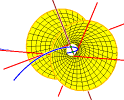
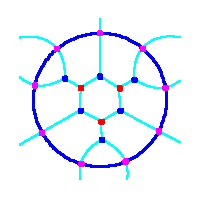

|
 |
Math 648: Computational Algebraic Geometry |
 |
| Tuesday, 28 April Blocker 302 | ||
|---|---|---|
| 2:30–3:10 | Aaishah Ale-Rasool and Pooja Joshi | The Hilbert Polynomial and Two Invariants of a Variety |
| 3:15–3:55 | David Cates and Jacob Guerreso | Canonical Heights in Arithmetic Dynamics |
| 4:00–4:40 | Yunpeng Meng and Ruzho Sagayaraj | Computing geometric intersection numbers and self‐intersection
numbers for loops on surfaces using Gröbner‐Shirshov bases |
| 4:45–5:25 | Nipun Amarasinghe and Phillip Speegle | Secant Loci and Partial Elimination Ideals |
| Wednesday, 29 April Blocker 302 | ||
| 1:00–1:40 | Daniel Dale and Somak Dutta | Certified Homotopy Continuation using interval arithmetic |
| 1:45–2:25 | John Ajayi and Kai Neshat | Truncated Gröbner Bases for Integer Programming |
| 2:30–3:10 | Andrew Biehl and William Taylor | Implicitizing curves in three ways |
| 3:15–3:55 | Quentin Holmes and Joshua Im | Rational Normal Scrolls |